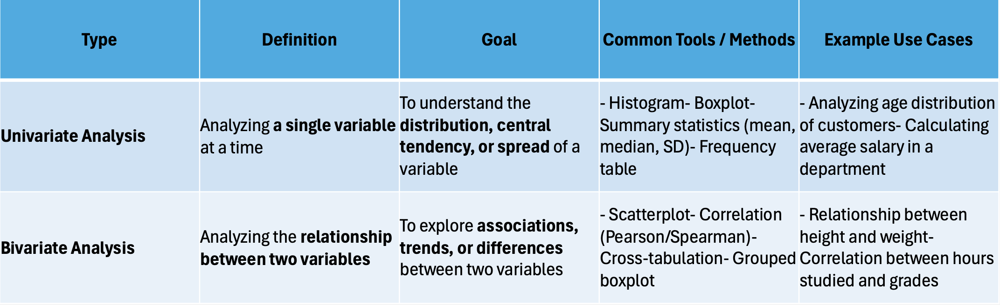

Statistic Details
1. Foundations of Statistical Machine Learning:#

Statistics and Machine Learning: Statistics provides the tools for understanding data (descriptive statistics, probability distributions), while machine learning provides the algorithms for building predictive models.
Data Exploration and Preparation: Statistical methods help in understanding data distributions, identifying outliers, and selecting relevant features for modeling.
Probability and Distributions: Understanding probability distributions is crucial for modeling and evaluating machine learning models.
2. Key Statistical Concepts and Techniques:#
Descriptive Statistics: Measures of central tendency (mean, median, mode), variability (variance, standard deviation), and distribution shape help summarize and understand data.
Hypothesis Testing: Used to compare populations, assess the significance of results, and evaluate model performance (e.g., t-tests, ANOVA, chi-square tests).
Resampling Methods: Techniques like cross-validation and bootstrapping are used to estimate model performance on unseen data, especially when data is limited.
Estimation Statistics: Focuses on estimating parameters and their uncertainty using confidence intervals, prediction intervals, etc.
Nonparametric Methods: Used when data doesn't meet the assumptions of parametric tests (e.g., t-tests).
3. Applications in Machine Learning:#
Model Building: Statistics provides the foundation for building various machine learning models, such as linear regression, logistic regression, and neural networks.
Model Evaluation: Statistical techniques like p-values, confidence intervals, and R-squared help in assessing the performance and reliability of machine learning models.
Feature Selection and Engineering: Statistics helps in identifying relevant features and transforming data for better model performance.
Interpreting Results: Statistical concepts help in understanding the meaning and significance of model predictions.
4. Examples:#
Linear Regression: Uses the method of least squares, a statistical technique, to find the best-fitting line that explains the relationship between variables.
Hypothesis Testing: Can be used to determine if a new model significantly outperforms an existing one.
Cross-validation: A resampling technique used to estimate how well a model will generalize to unseen data.
Statistics For Machine Learning#
Machine Learning Statistics: In the field of machine learning (ML), statistics plays a pivotal role in extracting meaningful insights from data to make informed decisions. Statistics provides the foundation upon which various ML algorithms are built, enabling the analysis, interpretation, and prediction of complex patterns within datasets.
- Types of Statistics
- Descriptive Statistics
- Measures of Dispersion
- Measures of Shape
- Covariance and Correlation
- Visualization Techniques
- Probability Theory
- Inferential Statistics
- Population and Sample
- Estimation
- Hypothesis Testing
- ANOVA (Analysis of Variance)
- Chi-Square Tests:
- Correlation and Regression
- Bayesian Statistics
Types of Statistics#
There are commonly two types of statistics.
-
Descriptive Statistics: "Descriptive Statistics" helps us simplify and organize big chunks of data. This makes large amounts of data easier to understand.
-
Inferential Statistics: "Inferential Statistics" is a little different. It uses smaller data to draw conclusions about a larger group. It helps us predict and draw conclusions about a population.
Descriptive Statistics Descriptive statistics summarize and describe the features of a dataset, providing a foundation for further statistical analysis.
Measures of Dispersion
-
Range: The difference between the maximum and minimum values.
-
Variance: The average squared deviation from the mean, representing data spread.
-
Standard Deviation: The square root of variance, indicating data spread relative to the mean.
-
Interquartile Range: The range between the first and third quartiles, measuring data spread around the median.
Measures of Shape
- Skewness: Indicates data asymmetry.
- Kurtosis: Measures the peakedness of the data distribution.

Covariance and Correlation#

Visualization Techniques#
- Histograms: Show data distribution.
- Box Plots: Highlight data spread and potential outliers.
- Scatter Plots: Illustrate relationships between variables.
Probability Theory#
Probability theory forms the backbone of statistical inference, aiding in quantifying uncertainty and making predictions based on data.
Basic Concepts
-
Random Variables: Variables with random outcomes.
-
Probability Distributions: Describe the likelihood of different outcomes.
Common Probability Distributions#
-
Binomial Distribution: Represents the number of successes in a fixed number of trials.
-
Poisson Distribution: Describes the number of events occurring within a fixed interval.
-
Normal Distribution: Characterizes continuous data symmetrically distributed around the mean.
Law of Large Numbers:#
States that as the sample size increases, the sample mean approaches the population mean.
Central Limit Theorem:#
Indicates that the distribution of sample means approximates a normal distribution as the sample size grows, regardless of the population's distribution.
Inferential Statistics#
Inferential statistics involve making predictions or inferences about a population based on a sample of data.
Population and Sample#
-
Population: The entire group being studied.
-
Sample: A subset of the population used for analysis.
Estimation#
-
Point Estimation: Provides a single value estimate of a population parameter.
-
Interval Estimation: Offers a range of values (confidence interval) within which the parameter likely lies.
-
Confidence Intervals: Indicate the reliability of an estimate.
Hypothesis Testing#
-
Null and Alternative Hypotheses: The null hypothesis assumes no effect or relationship, while the alternative suggests otherwise.
-
Type I and Type II Errors: Type I error is rejecting a true null hypothesis, while Type II is failing to reject a false null hypothesis.
-
p-Values: Measure the probability of obtaining the observed results under the null hypothesis.
-
t-Tests and z-Tests: Compare means to assess statistical significance.
ANOVA (Analysis of Variance):#
Compares means across multiple groups to determine if they differ significantly.
Chi-Square Tests:#
Assess the association between categorical variables.
Correlation and Regression:#
Understanding relationships between variables is critical in machine learning.
Correlation:
-
Pearson Correlation Coefficient: Measures linear relationship strength between two variables.
-
Spearman Rank Correlation: Assesses the strength and direction of the monotonic relationship between variables.
Regression Analysis
-
Simple Linear Regression: Models the relationship between two variables.
-
Multiple Linear Regression: Extends to multiple predictors.
-
Assumptions of Linear Regression: Linearity, independence, homoscedasticity, normality.
-
Interpretation of Regression Coefficients: Explains predictor influence on the response variable.
-
Model Evaluation Metrics: R-squared, Adjusted R-squared, RMSE.
Bayesian Statistics#
Bayesian statistics incorporate prior knowledge with current evidence to update beliefs. P(A∣B)=P(B)P(B∣A)⋅P(A), where
- P(A∣B): The probability of event A given that event B has occurred (posterior probability).
- P(B∣A): The probability of event B given that event A has occurred (likelihood).
- P(A): The probability of event A occurring (prior probability).
- P(B): The probability of event B occurring.
Descriptive Statistic#
Statistics is the foundation of data science. Descriptive statistics are simple tools that help us understand and summarize data.They show the basic features of a dataset, like the average, highest and lowest values and how spread out the numbers are. It's the first step in making sense of information.

Types of Descriptive Statistics#
There are three categories for standard classification of descriptive statistics methods, each serving different purposes in summarizing and describing data. They help us understand:
- Where the data centers (Measures of Central Tendency)
- How spread out the data is (Measure of Variability)
-
How the data is distributed (Measures of Frequency Distribution)
-
Measures of Central Tendency Statistical values that describe the central position within a dataset. There are three main measures of central tendency:

Mean: is the sum of observations divided by the total number of observations. It is also defined as average which is the sum divided by count.
The mean() function from Python’s statistics module is used to calculate the average of a set of numeric values. It adds up all the values in a list and divides the total by the number of elements.
mean_age_data = df['age'].mean()
mode_age_data = df['age'].mode()
median_age_data = df['age'].median()
print("mean age:",round(mean_age_data))
print("mode age:", mode_age_data)
print("median age:", median_age_data)

where, - x = Observations - n = number of terms
Mode: The most frequently occurring value in the dataset. It’s useful for categorical data and in cases where knowing the most common choice is crucial.
Introduction to Data and Statistics#
- Why Statistics – The need
- Connecting dots – Stats, ML, DL
- Statistics and AI life cycle
- Data and types
- Statistical hierarchy
- Connect stats with real-world problems.
- Fundamentals:
- Sample
- Population
- Probability & Distributions
- Central limit theorem
- Terminologies
- Univariate analysis
- Descriptive statistics
Statistical Foundation of AI#
- Introduction to Stats , ML , DL
- Types of Data and Statistical Hierarchy
- Measures of Central Tendency and Dispersion
- Data Cleaning and Missing Values
- Outlier Detection and Quantiles
- Basic Visualization : Boxplot, Scatterplot
- Frequency Tables and Sorting
What is Statistics#
Statistics is the science of collecting, analyzing, interpreting, and presenting data to make informed decisions.
Descriptive Statistics#
Definition: Descriptive statistics summarize and describe the main features of a dataset. Purpose: To organize, simplify, and present data in a meaningful way.
Examples: - Calculating the average score of students in a class. - Creating a bar chart showing the number of people in different age groups. - Finding median income in a city. - Standard deviation showing how spread-out exam scores are.
Inferential Statistics#
Definition: Inferential statistics use a sample of data to make predictions or generalizations about a larger population. Purpose: To draw conclusions, test hypotheses, and estimate population parameters.
Examples: - Using a survey of 1000 voters to predict election results for the entire country. - Performing a t-test to compare the effectiveness of two different medicines. - Estimating the average height of all adults in a city using a random sample.
AI ML & DL#


Stats vs ML vs DL#

Types of Data#
Statistical Hierarchy#
Measures of Central Tendency#
When to use what#
Measure of Dispersion#

Outlier Detection#

Outlier Detection Techniques#

Data Cleaning Techniques#

Quantiles and Percentiles#

Linear Interpolation#

Visualizations#


Table and Frequency Analysis#
Univariate and Bivariate Analysis#

Hands on Examples#
- Data Cleaning + Central Tendency & Dispersion
Dataset: [Netflix Movies and TV Shows](https://www.kaggle.com/datasets/shivamb/netflix-shows)
Task:
* Load the dataset in Excel or Python.
* Remove duplicate rows.
* Handle missing values in `director` and `rating` columns.
* Calculate mean, median, mode, and standard deviation of duration (after converting to numeric).
* Comment on which measure best represents the central tendency.
Topics Covered: Data Cleaning, Mean, Median, Mode, Standard Deviation
- Outlier Detection & Boxplot
Dataset: [Students Performance in Exams](https://www.kaggle.com/datasets/spscientist/students-performance-in-exams)
Task:
* Plot boxplots for `math score`, `reading score`, and `writing score`.
* Identify and mark outliers using both boxplot and Z-score methods.
* Discuss how outliers may affect the mean.
Topics Covered: Boxplot, Z-score, IQR, Outliers
- Dataset: Housing Prices Dataset (Ames Housing)
Task:
Load the dataset and inspect the Lot Area, SalePrice, and YearBuilt columns.
Identify and remove any impossible or suspicious values (e.g., Lot Area = 0).
Calculate and interpret mean, median, standard deviation for SalePrice.
Use describe() and interpret each value.
Bonus: Compare stats for houses built before and after 1980.
4. Visualization + Univariate & Bivariate Analysis#
Dataset: [Titanic Dataset](https://www.kaggle.com/datasets/yasserh/titanic-dataset)
Task:
* Plot histogram of `Age` (univariate).
* Create a scatterplot between `Age` and `Fare` (bivariate).
* Interpret the relationship visually.
* Use groupby to compare average fare for survivors and non-survivors.
Topics Covered: Histogram, Scatterplot, Univariate vs Bivariate
5. Linear Interpolation for Missing Data#
Dataset: [Air Quality Data Set](https://archive.ics.uci.edu/ml/datasets/Air+Quality)
Task:
* Identify missing values in `CO(GT)` column.
* Apply linear interpolation to fill gaps.
* Compare the mean before and after interpolation.
Topics Covered: Missing Value Handling, Linear Interpolation, Data Imputation
Probability, Hypothesis Testing, and Statistical Tests#
- Introduction to Probability and Distributions, Identifying Distributions
- Understanding Hypothesis Testing
- One Sample and 2 Sample t Tests
- ANOVA, Chi-Square Test
What is Probability#

Why is Probability Important in Statistics?#

What is a probability distribution#
Normal Distribution#
Binomial Distribution#
Poisson Distribution#
Uniform Distribution#

Identifying Types of Distributions#

Hypothesis Testing#
- A hypothesis is simply a claim or assumption we want to test using data. Two Types of Hypotheses:
-
Null Hypothesis (H₀): "There is no effect, no difference, nothing unusual."→ It's like the default assumption.
-
Alternative Hypothesis (H₁): "There is an effect or difference."→ What you're trying to prove.
Goal of Hypothesis Testing: Use sample data to decide if we have enough evidence to reject the null hypothesis. Example (Real Life):You want to test if a new teaching method improves scores. H₀: The new method is no better than the old one. H₁: The new method improves scores.
You collect exam data and use statistics to decide if the score increase is real or due to chance.
Hypothesis Testing Example#
- Think of a hypothesis test like a court trial.
- H0 (Null Hypothesis): Accused is innocent.
- H1 (Alternative Hypothesis): Accused is guilty.
- Just like in a trial, we assume the accused (H0) is innocent unless proven guilty.
- We collect sample data, like presenting evidence in court.
- The p-value tells us: If the accused were truly innocent (H0),
what is the chance of seeing this kind of evidence?
- If the p-value is very low (e.g., < 0.05), it's like strong evidence in court.
- So we reject H0 and declare the accused guilty (accept H1).
Important: Like a real trial, we never 'prove' innocence or guilt - we assess based on evidence!
What is p value#
Key Terms Hypothesis Testing#
Steps in Hypothesis Testing#
- Define H0 and H1
- Choose significance level (alpha)
- Select the test (t-test, ANOVA, etc.)
- Compute test statistic and p-value
- Compare p-value to alpha and draw conclusion
One-Sample t-test#
- Used when comparing sample mean to a known/population mean
- Example: Is average delivery time > 30 minutes?
- Demo in Excel or Python
Independent Two-Sample t-test#
- Used to compare means of two independent groups
- Example: Test scores of two teaching methods
- Assumptions: Normality, Equal variances
ANOVA#
- ANOVA = Analysis of Variance
- Compares means across 3 or more groups
- H0: All group means are equal
- If p < 0.05, at least one group is different
Chi-Square Test#
- For categorical data (e.g., Gender vs Purchase)
- Tests independence between variables
- Compares observed vs expected frequencies
Hands on examples#
- Probability Question
Dataset: [Students Performance in Exams (Kaggle)](https://www.kaggle.com/datasets/spscientist/students-performance-in-exams)
Problem:
Calculate the probability that a randomly selected student scored more than 80 in math.
Steps for Students:
Load dataset
Count number of students with math score > 80
Divide by total number of students
Print the probability
- Distribution Identification Question
Dataset: [Medical Cost Personal Dataset (Kaggle)](https://www.kaggle.com/datasets/mirichoi0218/insurance)
Problem:
Identify the distribution type of `charges` column using:
Histogram
Q-Q plot
Shapiro-Wilk test
Steps for Students:
Plot histogram of `charges`
Plot Q-Q plot
Conduct Shapiro-Wilk test and interpret if data is normally distributed
- One-tail t-test Question
Dataset: [Students Performance in Exams (same as above)](https://www.kaggle.com/datasets/spscientist/students-performance-in-exams)
Problem:
Test the hypothesis that mean math score is greater than 65 (use one-sample, one-tail t-test).
Steps for Students:
Null hypothesis: mean ≤ 65
Alternative hypothesis: mean > 65
Conduct one-sample t-test
Report t-statistic and p-value; conclude
- Two-tail t-test Question
Dataset: [Students Performance in Exams (same as above)](https://www.kaggle.com/datasets/spscientist/students-performance-in-exams)
Problem:
Test if average math score differs between male and female students (two-sample, two-tail t-test).
Steps for Students:
Null hypothesis: means are equal
Alternative hypothesis: means are different
Perform independent two-sample t-test
Report t-statistic and p-value; conclude
- ANOVA Question
``` Dataset: Students Performance in Exams (same as above)
Problem: Test if average reading score differs across parental education levels.
Steps for Students:
Null hypothesis: all group means are equal Alternative hypothesis: at least one group differs Perform ANOVA Report F-statistic and p-value; conclude
Dataset: Titanic Dataset (Kaggle)Problem: Test if survival status is independent of passenger class.
Steps for Students:
Create a contingency table (Passenger Class vs Survived) Perform chi-square test of independence Report chi-square statistic, p-value, and interpret
# 1 tailed t test
from scipy import stats
# Sample delivery times (in minutes)
delivery_times = [32, 35, 30, 31, 36, 33, 29, 34, 37, 28]
# Population mean to test against
mu_0 = 30
# One-sample t-test (one-tailed test: greater than 30)
t_stat, p_value_two_tailed = stats.ttest_1samp(delivery_times, mu_0)
# For one-tailed test (greater than), divide p-value by 2
p_value_one_tailed = p_value_two_tailed / 2
# Output results
print("Sample Mean:", round(sum(delivery_times) / len(delivery_times), 2))
print("t-statistic:", round(t_stat, 3))
print("p-value (one-tailed):", round(p_value_one_tailed, 4))
# Conclusion
alpha = 0.05
if p_value_one_tailed < alpha and t_stat > 0:
print("Conclusion: Reject H0 — average delivery time is greater than 30 minutes.")
else:
print("Conclusion: Fail to reject H0 — not enough evidence that average is greater.")
#Independent 2 tail test
from scipy import stats
# Scores from two independent groups
group_a = [75, 78, 74, 72, 80, 77, 73, 76, 79, 74] # Traditional
group_b = [82, 85, 84, 81, 86, 83, 80, 87, 85, 84] # Interactive
# Perform two-sample t-test (equal variances assumed)
t_stat, p_value = stats.ttest_ind(group_a, group_b, equal_var=True)
# Output results
print("Group A Mean:", round(sum(group_a)/len(group_a), 2))
print("Group B Mean:", round(sum(group_b)/len(group_b), 2))
print("t-statistic:", round(t_stat, 3))
print("p-value:", round(p_value, 4))
# Interpret result
alpha = 0.05
if p_value < alpha:
print("Conclusion: Reject H0 — There is a significant difference between the teaching methods.")
else:
print("Conclusion: Fail to reject H0 — No significant difference detected.")
#Anova
from scipy import stats
# Step 1: Create test scores for each group
group_a = [70, 72, 68, 75, 74] # Traditional
group_b = [80, 82, 85, 79, 81] # Online
group_c = [90, 88, 92, 91, 89] # Workshop
# Step 2: Perform one-way ANOVA test
f_stat, p_value = stats.f_oneway(group_a, group_b, group_c)
# Step 3: Print the result
print("F-statistic:", round(f_stat, 2))
print("p-value:", round(p_value, 4))
# Step 4: Interpret the result
alpha = 0.05
if p_value < alpha:
print("Conclusion: Reject H0 — At least one group is different.")
else:
print("Conclusion: Fail to reject H0 — No significant difference between groups.")
#Chi Square
import numpy as np
from scipy.stats import chi2_contingency
# Observed frequency table (2x2)
# Rows = Gender (Male, Female)
# Columns = Purchase (Yes, No)
observed = np.array([
[30, 20], # Male: 30 Yes, 20 No
[10, 40] # Female: 10 Yes, 40 No
])
## Q-Q Plot Worked Example code
# Q-Q Plot Worked Example: Custom Data vs Theoretical Normal Quantiles
# ----------------------------
# 2. Calculate percentiles for each data point
# Formula: (i - 0.5) / n
# ----------------------------
# ----------------------------
# 3. Calculate theoretical normal quantiles using inverse CDF (ppf)
# ----------------------------
- Correlation (Pearson, Spearman)
- Non-parametric tests overview
- PCA & Factor Analysis
- Cluster & Association Analysis
- Time Series Analysis
Multivariate Analysis, PCA, Clustering & Time Series#
Correlation: Measuring Relationships Between Two Things#
Visualizing Correlation#

Visualizing Pearson vs. Spearman Correlation (Example)#
What is Non Parametric Test#

Principal Component Analysis(PCA)#
Why is PCA needed?#

Interpreting PCA#

PCA in a nutshell with python code#
Iris Dataset https://archive.ics.uci.edu/dataset/53/iris
Factor Analysis and Cluster Analysis#
Clustering Algorithms Example#
Association Analysis#
Time Series Basics#

Assignment Title:#
Hypothesis Testing: Parametric vs Non-Parametric Analysis Based on Data Distribution
Assignment Objectives:#
By completing this assignment, you will be able to: - Understand when to use parametric vs non-parametric tests - Perform distribution checks (normality tests, plots) - Formulate and test null and alternative hypotheses - Use at least one parametric and one non-parametric test appropriately - Interpret results clearly with visuals and reasoning
Dataset:#
Employee Attrition Dataset – Kaggle
Dataset Features (Selected)
- Age (numeric)
- MonthlyIncome (numeric)
- JobSatisfaction (1–4)
- Attrition (Yes/No)
- JobRole (Sales Executive, Research Scientist, etc.)
Problem Statement:#
You are an HR data analyst at a large firm. The leadership wants to understand whether: - Monthly income and age differ between employees who left vs stayed - Job satisfaction differs across job roles
Use statistical hypothesis testing to answer the following: